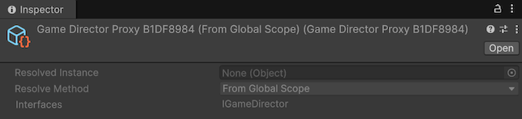

Runtime proxy inspector
The runtime proxy inspectorRuntime proxy inspectorRead-only custom inspector for runtime proxy assets (RuntimeProxyBase) that shows resolve configuration, implemented interfaces, and the resolved runtime instance during Play Mode. is the inspector for generated runtime proxyRuntime proxyScriptableObject placeholder asset (RuntimeProxy<TComponent>) injected into interface members at editor time and swapped to the real instance during scope startup. assets (RuntimeProxyBase). It is intentionally read-only. Use it to verify configuration created from your bindingBindingInstruction declared in a Scope that tells Saneject what to resolve, how to inject it, and where to search. declarations, not to author configuration directly.

For full runtime behavior, see Runtime proxy.
What this inspector is for
Use this inspector to verify:
- Which resolve strategy the runtime proxyRuntime proxy
ScriptableObjectplaceholder asset (RuntimeProxy<TComponent>) injected into interface members at editor time and swapped to the real instance during scope startup. will use at runtime. - What runtime proxyRuntime proxy
ScriptableObjectplaceholder asset (RuntimeProxy<TComponent>) injected into interface members at editor time and swapped to the real instance during scope startup. instance is resolved at runtime. - Whether creation-based proxies are
TransientorSingleton. - Whether
Dont Destroy On Loadis enabled for created objects. - Which interfaces the runtime proxyRuntime proxy
ScriptableObjectplaceholder asset (RuntimeProxy<TComponent>) injected into interface members at editor time and swapped to the real instance during scope startup. type implements. - In Play Mode, which concrete object instance was resolved.
Read-only behavior
All fields in this inspector are disabled.
That means you cannot edit Resolved Instance, Resolve Method, Prefab, Instance Mode, or Dont Destroy On Load here.
The configuration values come from runtime proxy bindingsRuntime proxy bindingComponent binding configured with FromRuntimeProxy() that injects a proxy asset at editor time and swaps it for a real runtime instance during scope initialization. in Scope.DeclareBindings() and are assigned when Saneject creates or reuses runtime proxyRuntime proxyScriptableObject placeholder asset (RuntimeProxy<TComponent>) injected into interface members at editor time and swapped to the real instance during scope startup. assets during injection.
To change values:
- Update the bindingBindingInstruction declared in a
Scopethat tells Saneject what to resolve, how to inject it, and where to search. chain in your scopeScopeMonoBehaviourthat declares bindings for a part of your hierarchy.. - Run injection again.
- Find the new generated runtime proxyRuntime proxy
ScriptableObjectplaceholder asset (RuntimeProxy<TComponent>) injected into interface members at editor time and swapped to the real instance during scope startup. asset to confirm the changes.
Example bindingBindingInstruction declared in a Scope that tells Saneject what to resolve, how to inject it, and where to search.:
using Plugins.Saneject.Runtime.Scopes;
using UnityEngine;
public class AudioScope : Scope
{
[SerializeField]
private GameObject audioPrefab;
protected override void DeclareBindings()
{
BindComponent<IAudioService, AudioService>()
.FromRuntimeProxy()
.FromComponentOnPrefab(audioPrefab, dontDestroyOnLoad: true)
.AsSingleton();
}
}
Inspector fields
Resolved Instance (Play Mode only)
Displays the runtime object that the runtime proxyRuntime proxyScriptableObject placeholder asset (RuntimeProxy<TComponent>) injected into interface members at editor time and swapped to the real instance during scope startup. resolved to, if any and if the application is running.
Resolve Method
Matches RuntimeProxyResolveMethod and defines how the runtime proxyRuntime proxyScriptableObject placeholder asset (RuntimeProxy<TComponent>) injected into interface members at editor time and swapped to the real instance during scope startup. finds or creates its target at runtime.
Available values:
FromGlobalScope: Looks up an already registered component inGlobalScope.FromAnywhereInLoadedScenes: Finds the first matching component in loaded scenes, including inactive objects.FromComponentOnPrefab: Instantiates the configured prefab and resolves the target component on that instance.FromNewComponentOnNewGameObject: Creates a newGameObjectand adds the target component.
See Runtime proxy and Global scope for more details.
Instance Mode
Shown only for creation-based methods:
FromComponentOnPrefab: This method can create new instances, soInstance Modecontrols whether each resolve creates a new object or reuses one.FromNewComponentOnNewGameObject: This method also creates instances, soInstance Modecontrols reuse vs new creation.
Matches RuntimeProxyInstanceMode:
Transient: Creates a new instance each time the runtime proxyRuntime proxyScriptableObjectplaceholder asset (RuntimeProxy<TComponent>) injected into interface members at editor time and swapped to the real instance during scope startup. resolves (creation-based methods only).Singleton: Reuses one created instance and registers it inGlobalScope.
See Runtime proxy and Global scope for more details.
Prefab
Shown only for FromComponentOnPrefab. This is the prefab that will be instantiated and searched for the target component.
Dont Destroy On Load
Shown only for creation-based methods:
FromComponentOnPrefab: Controls whether the instantiated prefab object survives scene changes.FromNewComponentOnNewGameObject: Controls whether the created runtimeGameObjectsurvives scene changes.
See Runtime proxy for more details.
If disabled for a creation-based method, the inspector shows a warning that the created object will be destroyed on scene load.
Interfaces
Lists the interface names implemented by the runtime proxyRuntime proxyScriptableObject placeholder asset (RuntimeProxy<TComponent>) injected into interface members at editor time and swapped to the real instance during scope startup. type, mirrored from its target. This helps verify what the generated runtime proxyRuntime proxyScriptableObject placeholder asset (RuntimeProxy<TComponent>) injected into interface members at editor time and swapped to the real instance during scope startup. can stand in for at injection sitesInjection siteInjected field, property or method..